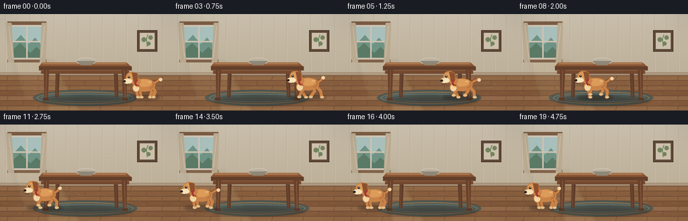
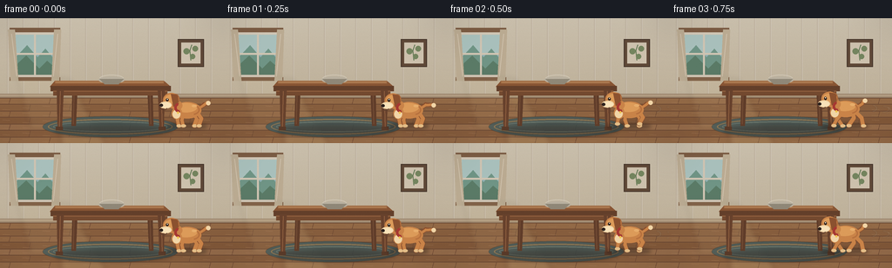
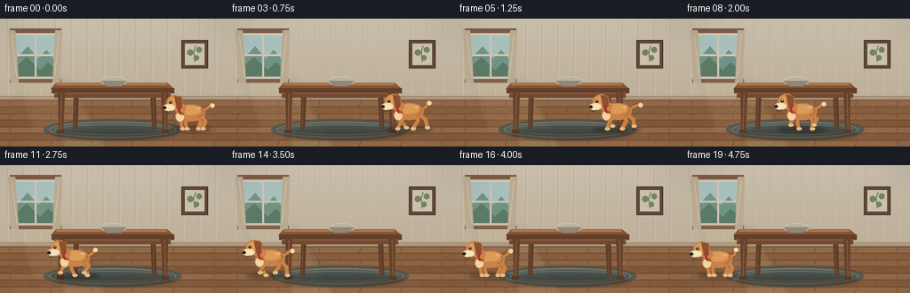
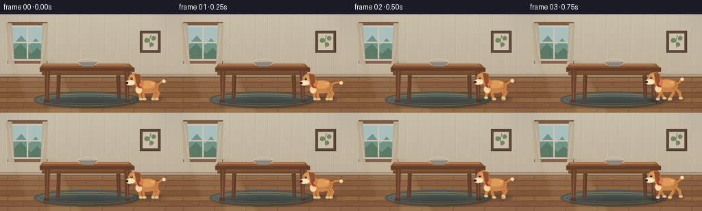
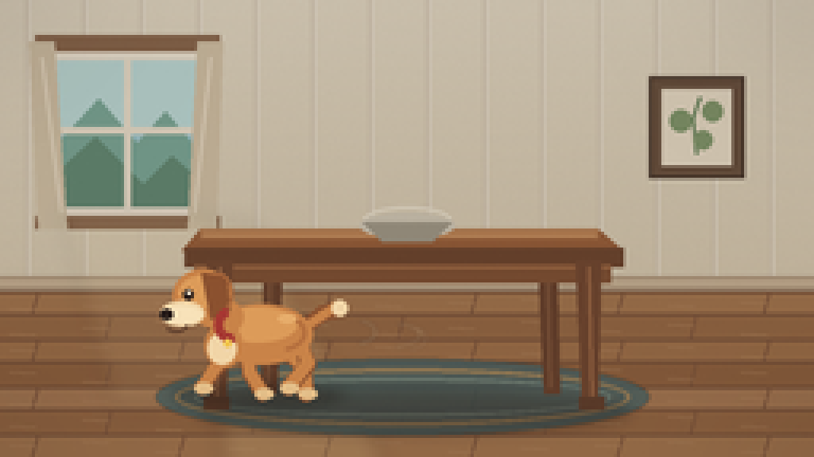
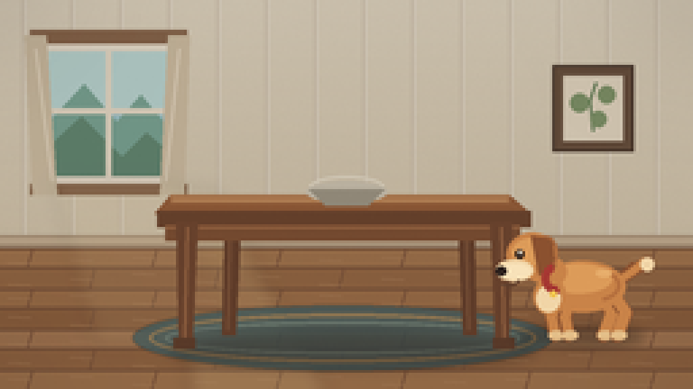
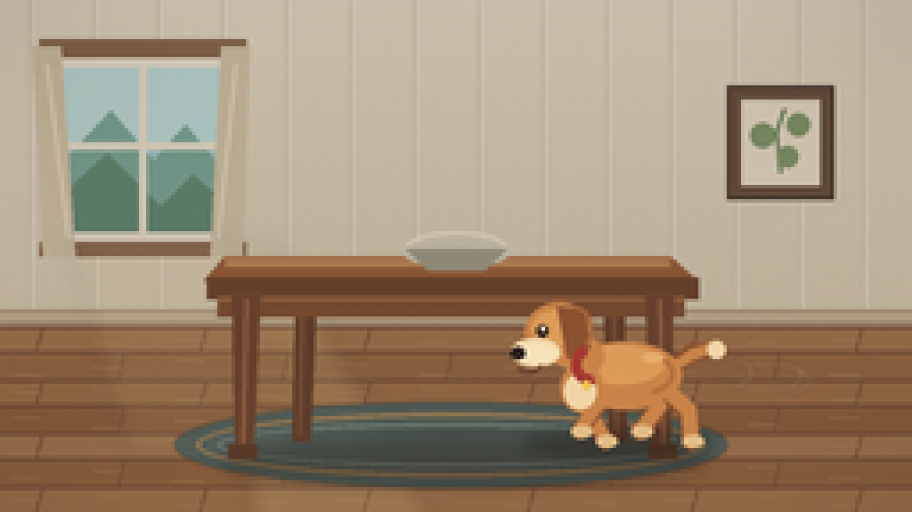
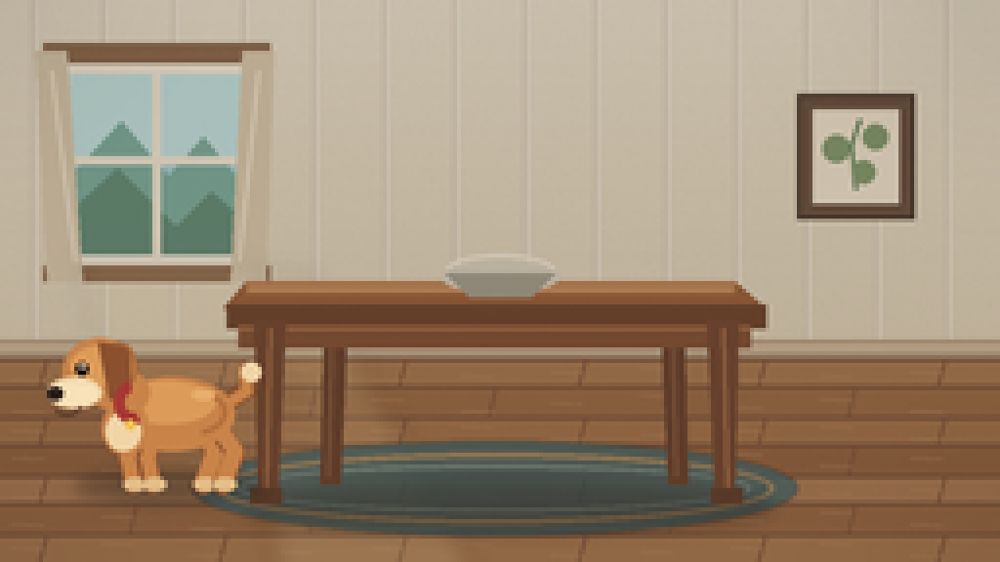

CODING AGENTS AS PIXEL WORLD MODELS
traex/DeepSeek-V4.1-Flash · dynamic_spatial_relationship_0002
点击播放 · 原生 RGB 像素
逐轮保存的候选
回放视频、检查图与代码变化。
每份候选均可单独播放。实际图片检查记录在下方工具轨迹中。
候选 01播放与检查图
点击播放 · 原生 RGB 像素


展开代码变化
--- 上一保存版本
+++ 本次保存版本
@@ -0,0 +1,384 @@
+from pathlib import Path
+import math
+
+import numpy as np
+from PIL import Image, ImageDraw, ImageFilter
+
+from artifact_io import save
+
+
+W, H = 256, 144
+SCALE = 4
+RW, RH = W * SCALE, H * SCALE
+N_FRAMES = 20
+FPS = 4.0
+
+
+def s(value):
+ return int(round(value * SCALE))
+
+
+def box(x0, y0, x1, y1):
+ return (s(x0), s(y0), s(x1), s(y1))
+
+
+def pts(points):
+ return [(s(x), s(y)) for x, y in points]
+
+
+def lerp(a, b, t):
+ return a + (b - a) * t
+
+
+def smoothstep(t):
+ t = max(0.0, min(1.0, t))
+ return t * t * (3.0 - 2.0 * t)
+
+
+def rounded_line(draw, points, fill, width):
+ scaled = pts(points)
+ w = max(1, s(width))
+ draw.line(scaled, fill=fill, width=w, joint="curve")
+ radius = w / 2
+ for x, y in scaled:
+ draw.ellipse((x - radius, y - radius, x + radius, y + radius), fill=fill)
+
+
+def create_room():
+ """Render the fixed set once at high resolution."""
+ image = Image.new("RGB", (RW, RH), "#e7dcc8")
+ draw = ImageDraw.Draw(image)
+
+ # Warm wall with a soft vertical light gradient.
+ for y in range(s(91)):
+ t = y / max(1, s(91))
+ color = (
+ int(lerp(235, 222, t)),
+ int(lerp(225, 208, t)),
+ int(lerp(203, 181, t)),
+ )
+ draw.line((0, y, RW, y), fill=color)
+
+ # Plaster texture and a faint wallpaper rhythm.
+ rng = np.random.default_rng(17)
+ wall = np.asarray(image, dtype=np.int16)
+ noise = rng.normal(0, 2.2, (s(91), RW, 1)).astype(np.int16)
+ wall[: s(91)] = np.clip(wall[: s(91)] + noise, 0, 255)
+ image = Image.fromarray(wall.astype(np.uint8), "RGB")
+ draw = ImageDraw.Draw(image)
+ for x in range(8, W, 18):
+ draw.line((s(x), 0, s(x), s(88)), fill=(211, 197, 176), width=max(1, SCALE // 2))
+ draw.line((s(x + 1), 0, s(x + 1), s(88)), fill=(240, 231, 216), width=max(1, SCALE // 2))
+
+ # Window: cool daylight, wooden frame, and pale curtains.
+ draw.rounded_rectangle(box(14, 15, 66, 69), radius=s(2), fill="#f4ead7", outline="#755d47", width=s(1.2))
+ draw.rectangle(box(18, 19, 62, 65), fill="#a9d1d5")
+ draw.rectangle(box(18, 19, 62, 40), fill="#c4e3df")
+ draw.polygon(pts([(18, 45), (31, 31), (43, 45), (52, 35), (62, 47), (62, 65), (18, 65)]), fill="#7fae9d")
+ draw.polygon(pts([(18, 54), (30, 43), (45, 58), (54, 49), (62, 56), (62, 65), (18, 65)]), fill="#668f78")
+ draw.rectangle(box(39, 19, 41, 65), fill="#f3e8d3")
+ draw.rectangle(box(18, 40, 62, 42), fill="#f3e8d3")
+ draw.rectangle(box(11, 11, 69, 16), fill="#8d694d")
+ draw.rectangle(box(11, 68, 69, 72), fill="#8d694d")
+ draw.polygon(pts([(9, 13), (17, 13), (21, 72), (12, 72)]), fill="#d9c9ac")
+ draw.polygon(pts([(62, 13), (70, 13), (68, 72), (59, 72)]), fill="#d9c9ac")
+ draw.line((s(13), s(18), s(19), s(67)), fill="#efe1c8", width=s(1))
+ draw.line((s(66), s(18), s(61), s(67)), fill="#efe1c8", width=s(1))
+
+ # Framed print to balance the right side of the room.
+ draw.rectangle(box(204, 24, 234, 56), fill="#6b523f", outline="#4c3b2f", width=s(1))
+ draw.rectangle(box(208, 28, 230, 52), fill="#f0e4cd")
+ rounded_line(draw, [(219, 48), (218, 37), (220, 31)], "#6f8b62", 1.1)
+ for cx, cy, r in [(214, 38, 3.5), (224, 35, 3.2), (221, 44, 3.0)]:
+ draw.ellipse(box(cx - r, cy - r, cx + r, cy + r), fill="#849b6e")
+
+ # Baseboard.
+ draw.rectangle(box(0, 87, 256, 92), fill="#b39b7f")
+ draw.rectangle(box(0, 88, 256, 90), fill="#cfb99a")
+ draw.line((0, s(92), RW, s(92)), fill="#72543e", width=s(1))
+
+ # Oak floor.
+ draw.rectangle(box(0, 92, 256, 144), fill="#9b6d48")
+ floor_tones = ["#a87950", "#9b6c46", "#a3734b", "#936440", "#aa7b54", "#986944"]
+ y = 92
+ row = 0
+ while y < 144:
+ next_y = min(144, y + (7 if row % 2 == 0 else 8))
+ draw.rectangle(box(0, y, 256, next_y), fill=floor_tones[row % len(floor_tones)])
+ draw.line((0, s(y), RW, s(y)), fill="#765039", width=s(0.8))
+ offset = 12 if row % 2 == 0 else 35
+ for x in range(offset, 256, 46):
+ draw.line((s(x), s(y), s(x - 2), s(next_y)), fill="#80563c", width=s(0.8))
+ for x in range(3, 256, 23):
+ yy = y + 2 + ((x + row) % max(2, next_y - y - 3))
+ draw.line((s(x), s(yy), s(x + 8), s(yy + 0.4)), fill="#b98b62", width=max(1, SCALE // 2))
+ y = next_y
+ row += 1
+
+ # Window light pools on wall and floor.
+ light = Image.new("RGBA", (RW, RH), (0, 0, 0, 0))
+ ld = ImageDraw.Draw(light)
+ ld.polygon(pts([(65, 70), (79, 70), (121, 144), (70, 144)]), fill=(255, 232, 171, 35))
+ ld.polygon(pts([(19, 66), (62, 66), (91, 128), (35, 128)]), fill=(255, 235, 181, 22))
+ light = light.filter(ImageFilter.GaussianBlur(s(3)))
+ image = Image.alpha_composite(image.convert("RGBA"), light).convert("RGB")
+ draw = ImageDraw.Draw(image)
+
+ # Soft oval rug beneath the table.
+ rug = Image.new("RGBA", (RW, RH), (0, 0, 0, 0))
+ rd = ImageDraw.Draw(rug)
+ rd.ellipse(box(49, 113, 204, 137), fill=(73, 103, 105, 205))
+ rd.ellipse(box(55, 116, 198, 134), outline=(178, 145, 96, 230), width=s(1.3))
+ rd.ellipse(box(61, 119, 192, 131), outline=(121, 151, 144, 220), width=s(1))
+ rug = rug.filter(ImageFilter.GaussianBlur(s(0.35)))
+ image = Image.alpha_composite(image.convert("RGBA"), rug).convert("RGB")
+ draw = ImageDraw.Draw(image)
+
+ # Table shadow.
+ shadow = Image.new("RGBA", (RW, RH), (0, 0, 0, 0))
+ sd = ImageDraw.Draw(shadow)
+ sd.ellipse(box(62, 123, 198, 136), fill=(40, 29, 24, 92))
+ shadow = shadow.filter(ImageFilter.GaussianBlur(s(2.2)))
+ image = Image.alpha_composite(image.convert("RGBA"), shadow).convert("RGB")
+ draw = ImageDraw.Draw(image)
+
+ # Rear table legs.
+ draw.polygon(pts([(83, 79), (89, 79), (87, 124), (82, 124)]), fill="#6b442e")
+ draw.polygon(pts([(169, 79), (175, 79), (176, 124), (171, 124)]), fill="#6b442e")
+ draw.line((s(85), s(82), s(84), s(122)), fill="#80553a", width=s(1.2))
+ draw.line((s(172), s(82), s(173), s(122)), fill="#80553a", width=s(1.2))
+
+ # Tabletop and apron.
+ draw.polygon(pts([(63, 72), (188, 72), (196, 79), (57, 79)]), fill="#9d623b")
+ draw.polygon(pts([(63, 72), (188, 72), (188, 75), (63, 75)]), fill="#bd8152")
+ draw.rectangle(box(58, 78, 196, 84), fill="#70472f")
+ draw.rectangle(box(61, 83, 192, 89), fill="#845335")
+ draw.line((s(61), s(84), s(192), s(84)), fill="#a66e47", width=s(1))
+ draw.line((s(64), s(74), s(187), s(74)), fill="#d29a66", width=s(0.8))
+
+ # Front legs.
+ draw.polygon(pts([(65, 82), (73, 82), (71, 128), (66, 128)]), fill="#754a31")
+ draw.polygon(pts([(181, 82), (189, 82), (188, 128), (183, 128)]), fill="#754a31")
+ draw.line((s(69), s(84), s(68), s(125)), fill="#a26c47", width=s(1.1))
+ draw.line((s(185), s(84), s(186), s(125)), fill="#a26c47", width=s(1.1))
+ draw.rectangle(box(64, 125, 72, 129), fill="#63402c")
+ draw.rectangle(box(182, 125, 190, 129), fill="#63402c")
+
+ # A simple bowl on the tabletop.
+ draw.ellipse(box(113, 67, 143, 75), fill="#d8d0bd")
+ draw.polygon(pts([(114, 70), (142, 70), (136, 76), (120, 76)]), fill="#a59e8c")
+ draw.arc(box(114, 65, 142, 74), 185, 355, fill="#f2e9d5", width=s(1.1))
+
+ # Subtle vignette.
+ vignette = Image.new("L", (RW, RH), 0)
+ vd = ImageDraw.Draw(vignette)
+ vd.ellipse(box(-38, -22, 294, 166), fill=115)
+ vignette = vignette.filter(ImageFilter.GaussianBlur(s(22)))
+ dark = Image.new("RGBA", (RW, RH), (35, 23, 18, 255))
+ dark.putalpha(Image.eval(vignette, lambda p: int((255 - p) * 0.32)))
+ image = Image.alpha_composite(image.convert("RGBA"), dark).convert("RGB")
+ return image
+
+
+def dog_x(index):
+ """Right-to-left path with anticipation, acceleration, and a gentle stop."""
+ start = 214.0
+ end = 43.0
+ key_t = index / (N_FRAMES - 1)
+ if index == 0:
+ return start
+ if index == 1:
+ return start - 1.5
+ if index <= 14:
+ t = smoothstep((index - 1) / 13.0)
+ return lerp(start - 1.5, end, t)
+ settle = (index - 14) / 5.0
+ return end + 1.2 * math.sin(settle * math.pi)
+
+
+def running_amount(index):
+ if index <= 1:
+ return 0.0
+ if index >= 15:
+ return 0.0
+ if index == 2:
+ return 0.65
+ if index == 14:
+ return 0.45
+ return 1.0
+
+
+def draw_leg(draw, shoulder, paw, kind, fur, fur_dark, paw_color):
+ sx, sy = shoulder
+ px, py = paw
+ if kind == "front":
+ knee = (lerp(sx, px, 0.45) - 1.2, lerp(sy, py, 0.50))
+ width = 4.7
+ else:
+ knee = (lerp(sx, px, 0.34) + 3.0, lerp(sy, py, 0.48) - 1.5)
+ width = 5.3
+ rounded_line(draw, [(sx, sy), knee, (px, py)], fur_dark, width)
+ rounded_line(draw, [(sx, sy - 0.4), (knee[0], knee[1] - 0.4), (px, py - 0.3)], fur, width - 1.0)
+ draw.ellipse(box(px - 2.6, py - 1.7, px + 3.4, py + 1.8), fill=paw_color)
+
+
+def draw_dog(canvas, center_x, baseline, index):
+ run = running_amount(index)
+ phase = (214.0 - center_x) * 0.19 + index * 0.82
+ bob = run * (1.6 * abs(math.sin(phase * 1.05)))
+ body_y = 104.5 - bob
+ wag = math.sin(index * 1.55) * (1.0 + 1.3 * (1.0 - run))
+
+ # Ground shadow.
+ shadow = Image.new("RGBA", (RW, RH), (0, 0, 0, 0))
+ sd = ImageDraw.Draw(shadow)
+ shadow_w = 24 + 3 * run
+ sd.ellipse(
+ box(center_x - shadow_w, baseline - 3.0, center_x + shadow_w, baseline + 4.0),
+ fill=(41, 29, 23, 105),
+ )
+ shadow = shadow.filter(ImageFilter.GaussianBlur(s(2.1)))
+ canvas.alpha_composite(shadow)
+ draw = ImageDraw.Draw(canvas)
+
+ fur = "#c98348"
+ fur_light = "#dc9b59"
+ fur_dark = "#8b512f"
+ cream = "#f1d5a7"
+ paw_color = "#e3bd87"
+ collar = "#a63832"
+
+ # Motion strokes make the fast crossing legible while remaining part of the scene.
+ if run > 0.6:
+ stroke = Image.new("RGBA", (RW, RH), (0, 0, 0, 0))
+ st = ImageDraw.Draw(stroke)
+ for offset, length, alpha in [(7, 12, 72), (15, 18, 55), (23, 12, 38)]:
+ x0 = center_x + 18 + offset
+ y0 = body_y - 4 + offset * 0.12
+ st.arc(box(x0, y0, x0 + length, y0 + 8), 282, 82, fill=(245, 224, 189, alpha), width=s(1.1))
+ stroke = stroke.filter(ImageFilter.GaussianBlur(s(0.45)))
+ canvas.alpha_composite(stroke)
+ draw = ImageDraw.Draw(canvas)
+
+ # Tail.
+ tail_tip_x = center_x + 25 + wag * 1.8
+ tail_tip_y = body_y - 7 + wag * 1.1
+ rounded_line(
+ draw,
+ [(center_x + 12, body_y + 1), (center_x + 20, body_y - 5), (tail_tip_x, tail_tip_y)],
+ fur_dark,
+ 5.0,
+ )
+ rounded_line(
+ draw,
+ [(center_x + 13, body_y), (center_x + 20, body_y - 4.5), (tail_tip_x - 1.5, tail_tip_y - 0.5)],
+ fur,
+ 3.0,
+ )
+ draw.ellipse(box(tail_tip_x - 2.4, tail_tip_y - 2.3, tail_tip_x + 2.6, tail_tip_y + 2.7), fill=cream)
+
+ # Four legs, rear pair first.
+ leg_phase = phase
+ legs = [
+ ("hind", center_x + 9.0, 0.0, 0.90),
+ ("hind", center_x + 14.0, math.pi, 1.0),
+ ("front", center_x - 9.0, math.pi, 1.05),
+ ("front", center_x - 4.0, 0.0, 1.0),
+ ]
+ for kind, lx, offset, strength in legs:
+ swing = math.sin(leg_phase + offset) * run * 7.5 * strength
+ lift = max(0.0, math.cos(leg_phase + offset)) * run * 4.5
+ if kind == "front":
+ paw = (lx + swing - run * 1.5, baseline - lift)
+ shoulder = (lx, body_y + 7.5)
+ else:
+ paw = (lx + swing * 0.82 + run * 1.0, baseline - lift)
+ shoulder = (lx, body_y + 7.0)
+ draw_leg(draw, shoulder, paw, kind, fur, fur_dark, paw_color)
+
+ # Body, chest, neck.
+ draw.ellipse(box(center_x - 15, body_y - 8, center_x + 17, body_y + 11), fill=fur)
+ draw.ellipse(box(center_x - 13, body_y - 7, center_x + 12, body_y + 4), fill=fur_light)
+ draw.ellipse(box(center_x - 17, body_y - 2, center_x - 5, body_y + 12), fill=fur)
+ draw.ellipse(box(center_x - 16, body_y + 1, center_x - 7, body_y + 11), fill=cream)
+
+ # Neck and head.
+ head_y = body_y - 9.5 + 0.5 * math.sin(phase * 2)
+ rounded_line(draw, [(center_x - 10, body_y - 4), (center_x - 15, head_y + 4)], fur, 10.5)
+ draw.ellipse(box(center_x - 27, head_y - 9, center_x - 8, head_y + 8), fill=fur)
+ draw.ellipse(box(center_x - 25, head_y - 7, center_x - 10, head_y + 3), fill=fur_light)
+ draw.ellipse(box(center_x - 31, head_y + 1, center_x - 17, head_y + 9), fill=cream)
+ draw.ellipse(box(center_x - 30, head_y + 2.5, center_x - 18, head_y + 8), fill="#f8e2b9")
+
+ # Floppy ear.
+ draw.polygon(
+ pts(
+ [
+ (center_x - 18, head_y - 8),
+ (center_x - 10, head_y - 7),
+ (center_x - 9 + wag * 0.25, head_y + 4),
+ (center_x - 15, head_y + 7),
+ ]
+ ),
+ fill=fur_dark,
+ )
+ draw.arc(
+ box(center_x - 18, head_y - 8, center_x - 8, head_y + 5),
+ 265,
+ 78,
+ fill="#a9683c",
+ width=s(1.1),
+ )
+
+ # Face.
+ eye_x = center_x - 22.2
+ eye_y = head_y - 1.0
+ draw.ellipse(box(eye_x - 1.6, eye_y - 1.8, eye_x + 1.6, eye_y + 1.8), fill="#2d201b")
+ draw.ellipse(box(eye_x - 0.4, eye_y - 1.3, eye_x + 0.6, eye_y - 0.1), fill="#fff4dc")
+ draw.ellipse(box(center_x - 31.0, head_y + 3.5, center_x - 27.0, head_y + 7.0), fill="#2b201c")
+ draw.arc(box(center_x - 30, head_y + 5, center_x - 22, head_y + 11), 12, 140, fill="#60402e", width=s(1))
+
+ # Collar and tag.
+ draw.arc(
+ box(center_x - 14, body_y - 7, center_x - 4, body_y + 4),
+ 70,
+ 260,
+ fill=collar,
+ width=s(3.0),
+ )
+ draw.ellipse(box(center_x - 11, body_y + 3, center_x - 8.5, body_y + 5.5), fill="#f0c34f")
+
+ # A few coat markings.
+ draw.arc(
+ box(center_x - 2, body_y - 5, center_x + 15, body_y + 7),
+ 285,
+ 75,
+ fill="#b56f3d",
+ width=s(1.4),
+ )
+ draw.ellipse(box(center_x + 6, body_y - 5, center_x + 12, body_y - 2), fill="#e7ad6b")
+
+
+def add_frame_finish(image, index):
+ """Lighting, tiny film grain, and the final downscale."""
+ arr = np.asarray(image, dtype=np.int16)
+ rng = np.random.default_rng(1000 + index)
+ grain = rng.normal(0, 1.15, (RH, RW, 1)).astype(np.int16)
+ arr = np.clip(arr + grain, 0, 255).astype(np.uint8)
+ image = Image.fromarray(arr, "RGB")
+ return np.asarray(image.resize((W, H), Image.Resampling.LANCZOS), dtype=np.uint8)
+
+
+def main():
+ case_dir = Path(__file__).resolve().parent
+ room = create_room()
+ frames = []
+ for i in range(N_FRAMES):
+ frame = room.convert("RGBA")
+ draw_dog(frame, dog_x(i), 124.0, i)
+ frames.append(add_frame_finish(frame.convert("RGB"), i))
+ save(np.stack(frames), case_dir)
+
+
+if __name__ == "__main__":
+ main()
候选 02播放与检查图
点击播放 · 原生 RGB 像素


展开代码变化
--- 上一保存版本
+++ 本次保存版本
@@ -1,5 +1,7 @@
from pathlib import Path
import math
+import shutil
+import subprocess
import numpy as np
from PIL import Image, ImageDraw, ImageFilter
@@ -64,7 +66,7 @@
wall = np.asarray(image, dtype=np.int16)
noise = rng.normal(0, 2.2, (s(91), RW, 1)).astype(np.int16)
wall[: s(91)] = np.clip(wall[: s(91)] + noise, 0, 255)
- image = Image.fromarray(wall.astype(np.uint8), "RGB")
+ image = Image.fromarray(wall.astype(np.uint8))
draw = ImageDraw.Draw(image)
for x in range(8, W, 18):
draw.line((s(x), 0, s(x), s(88)), fill=(211, 197, 176), width=max(1, SCALE // 2))
@@ -183,27 +185,25 @@
def dog_x(index):
"""Right-to-left path with anticipation, acceleration, and a gentle stop."""
start = 214.0
- end = 43.0
- key_t = index / (N_FRAMES - 1)
+ end = 39.0
if index == 0:
return start
if index == 1:
- return start - 1.5
- if index <= 14:
- t = smoothstep((index - 1) / 13.0)
- return lerp(start - 1.5, end, t)
- settle = (index - 14) / 5.0
- return end + 1.2 * math.sin(settle * math.pi)
+ return start - 1.8
+ if index <= 16:
+ t = smoothstep((index - 1) / 15.0)
+ return lerp(start - 1.8, end, t)
+ return end
def running_amount(index):
if index <= 1:
return 0.0
- if index >= 15:
+ if index >= 16:
return 0.0
if index == 2:
return 0.65
- if index == 14:
+ if index == 15:
return 0.45
return 1.0
@@ -365,7 +365,7 @@
rng = np.random.default_rng(1000 + index)
grain = rng.normal(0, 1.15, (RH, RW, 1)).astype(np.int16)
arr = np.clip(arr + grain, 0, 255).astype(np.uint8)
- image = Image.fromarray(arr, "RGB")
+ image = Image.fromarray(arr)
return np.asarray(image.resize((W, H), Image.Resampling.LANCZOS), dtype=np.uint8)
@@ -379,6 +379,30 @@
frames.append(add_frame_finish(frame.convert("RGB"), i))
save(np.stack(frames), case_dir)
+ # The contract's canonical form is the frame sequence; provide an MP4 too.
+ ffmpeg = shutil.which("ffmpeg")
+ if ffmpeg:
+ subprocess.run(
+ [
+ ffmpeg,
+ "-y",
+ "-loglevel",
+ "error",
+ "-framerate",
+ str(int(FPS)),
+ "-i",
+ str(case_dir / "frames" / "%02d.png"),
+ "-c:v",
+ "libx264",
+ "-crf",
+ "16",
+ "-pix_fmt",
+ "yuv420p",
+ str(case_dir / "output.mp4"),
+ ],
+ check=True,
+ )
+
if __name__ == "__main__":
main()
候选 03播放与检查图
点击播放 · 原生 RGB 像素

展开代码变化
--- 上一保存版本
+++ 本次保存版本
@@ -402,6 +402,23 @@
],
check=True,
)
+ else:
+ try:
+ import av
+
+ with av.open(str(case_dir / "output.mp4"), mode="w") as container:
+ stream = container.add_stream("libx264", rate=int(FPS))
+ stream.width, stream.height = W, H
+ stream.pix_fmt = "yuv420p"
+ stream.options = {"crf": "16", "preset": "medium"}
+ for frame_array in frames:
+ video_frame = av.VideoFrame.from_ndarray(frame_array, format="rgb24")
+ for packet in stream.encode(video_frame):
+ container.mux(packet)
+ for packet in stream.encode():
+ container.mux(packet)
+ except (ImportError, RuntimeError):
+ pass
if __name__ == "__main__":
可观测工具轨迹
实际执行的命令与返回图片。
命令 1exit 0
/bin/bash -c "pwd && rg --files -g 'prompt.txt' -g 'GENERATION_RULES.md' -g 'task_spec.json' -g '"'!node_modules'"'"
命令 2exit 0
/bin/bash -c "ls -la && find . -maxdepth 2 -type f | sed 's#"'^./##'"' | sort | head -200"
命令 3exit 0
/bin/bash -c 'cat GENERATION_RULES.md'
命令 4exit 0
/bin/bash -c "cat prompt.txt && printf '\\n--- task_spec.json ---\\n' && cat task_spec.json"
命令 5exit 0
/bin/bash -c "sed -n '1,260p' artifact_io.py && printf '\\n--- player ---\\n' && sed -n '1,260p' player_template.html"
命令 6exit 0
/bin/bash -c 'python generate.py'
命令 7exit 0
/bin/bash -c "python - <<'PY'
from PIL import Image
for i in [0, 5, 10, 15, 19]:
im=Image.open(f'frames/{i:02d}.png')
im.resize((1024,576), Image.Resampling.NEAREST).save(f'.tmp/frame_{i:02d}_4x.png')
PY"命令 8exit 0
/bin/bash -c 'python generate.py'
命令 9exit 127
/bin/bash -c 'ffprobe -v error -select_streams v:0 -show_entries stream=width,height,r_frame_rate,nb_frames,duration,pix_fmt -of default=noprint_wrappers=1 output.mp4'
命令 10exit 1
/bin/bash -c "python - <<'PY'
from pathlib import Path
from PIL import Image
import numpy as np
p=Path('.')
frames=sorted((p/'frames').glob('*.png'))
print('frame_count', len(frames))
print('sizes', sorted(set(Image.open(f).size for f in frames)))
a=np.load('pixels.npz')['pixels']
print('pixels_shape', a.shape, 'dtype', a.dtype)
print('pixels_sha256', __import__('hashlib').sha256(a.tobytes()).hexdigest())
for name in ['generate.py','index.html','inspection.png','transition_check.png','output.mp4']:
print(name, (p/name).stat().st_size)
PY"命令 11exit 0
/bin/bash -c "command -v ffmpeg || true; command -v avconv || true; command -v gst-launch-1.0 || true; python - <<'PY'
import importlib.util
for m in ['cv2','imageio','imageio_ffmpeg','av','moviepy']:
print(m, bool(importlib.util.find_spec(m)))
PY"命令 12exit 0
/bin/bash -c "python generate.py && ls -lh output.mp4 && python - <<'PY'
import av
with av.open('output.mp4') as c:
s=c.streams.video[0]
print('codec',s.codec_context.name,'size',s.width,s.height,'rate',s.average_rate,'frames',s.frames,'duration_s',float(c.duration/av.time_base) if c.duration else None)
PY"命令 13exit 0
/bin/bash -c "python - <<'PY'
from pathlib import Path
from PIL import Image
import hashlib
import numpy as np
import av
frames=sorted(Path('frames').glob('*.png'))
assert len(frames)==20
assert all(Image.open(f).size==(256,144) for f in frames)
a=np.load('pixels.npz')['pixels']
assert a.shape==(144,256,20) and a.dtype==np.uint32
with av.open('output.mp4') as c:
decoded=list(c.decode(video=0))
assert len(decoded)==20 and all(f.width==256 and f.height==144 for f in decoded)
for name in ['generate.py','index.html','inspection.png','transition_check.png','output.mp4','pixels.npz']:
assert Path(name).is_file(), name
print('PASS: 20 RGB frames, 256x144, 4 fps, 5.0 s; all required artifacts present')
print('pixels_sha256', hashlib.sha256(a.tobytes()).hexdigest())
PY"命令 14exit 0
/bin/bash -c 'git status --short 2>/dev/null || true; ls -lh frames/00.png frames/19.png output.mp4 index.html inspection.png'
视觉工具实际返回图片 1

视觉工具实际返回图片 2

视觉工具实际返回图片 3

视觉工具实际返回图片 4

视觉工具实际返回图片 5
视觉工具实际返回图片 6

视觉工具实际返回图片 7

保存候选 3 份；完成命令 14 次；可验证图片返回 7 张。原始 API 响应与完整日志保留在本地。